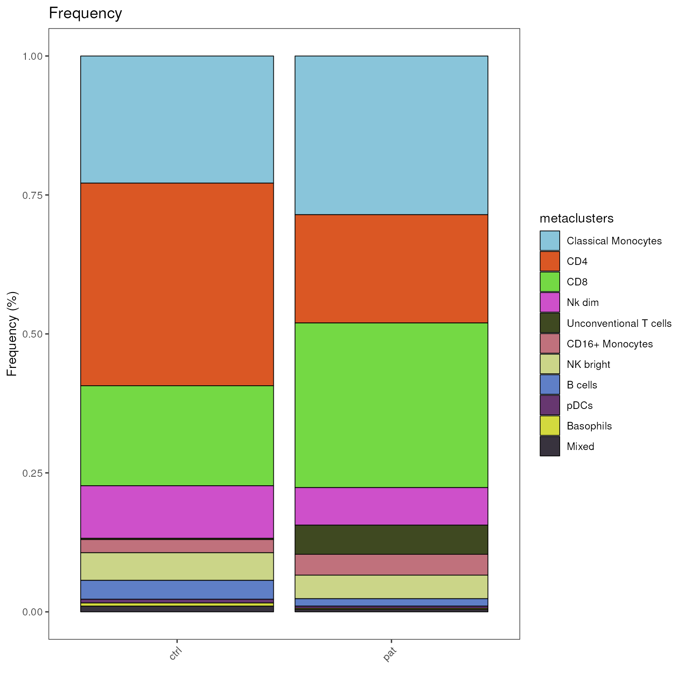
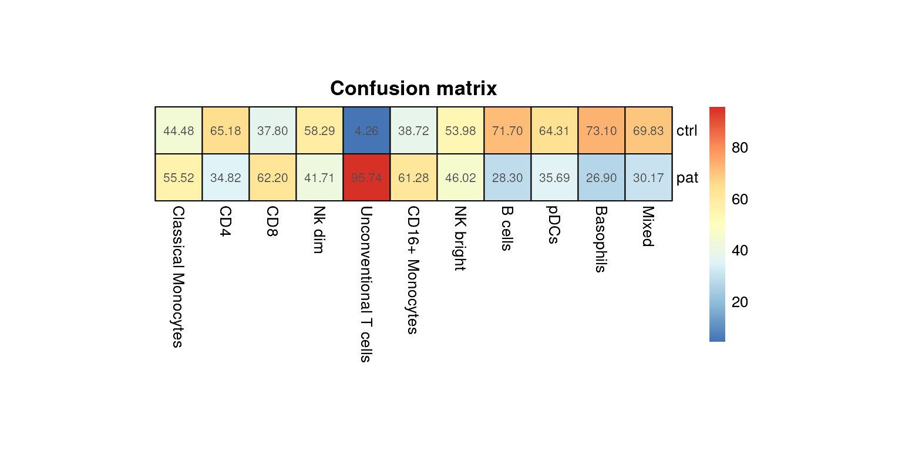
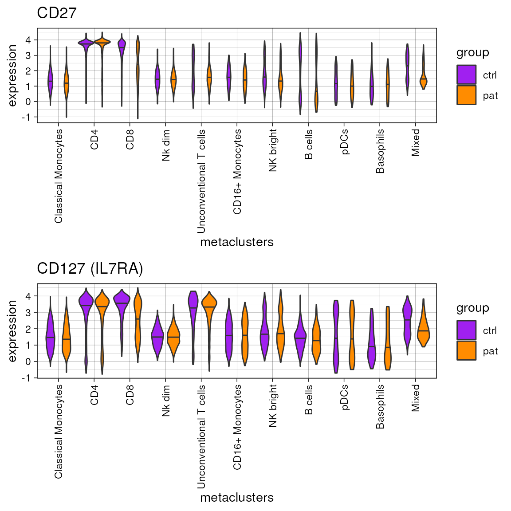
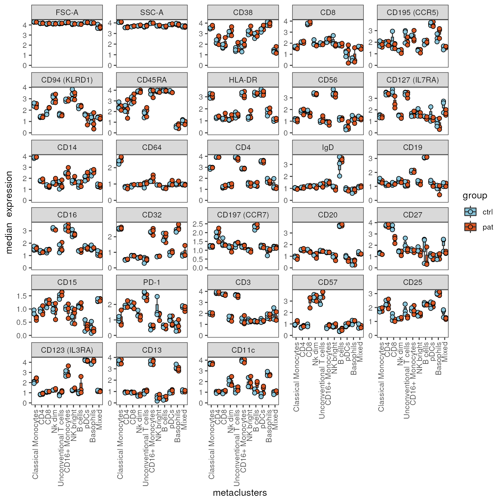
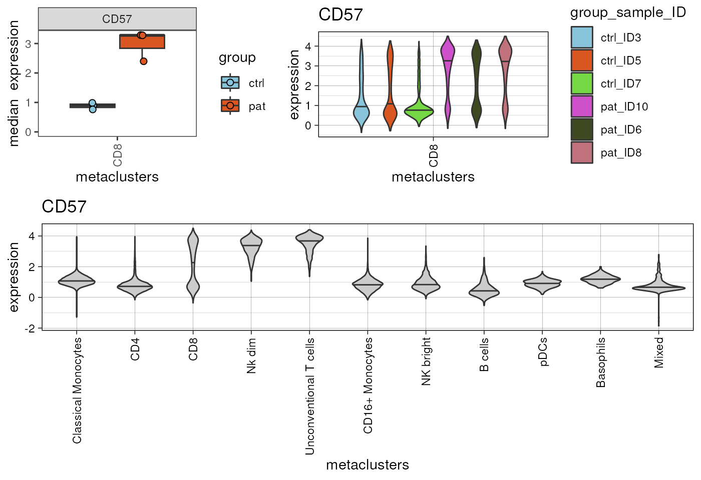

Differential Analysis with cyCONDOR
Source:vignettes/Differential_Analysis.Rmd
Differential_Analysis.Rmd
library(cyCONDOR)
#> Warning: replacing previous import 'Biobase::rowMedians' by
#> 'DelayedMatrixStats::rowMedians' when loading 'cyCONDOR'
#> Warning: replacing previous import 'Biobase::contents' by 'Hmisc::contents'
#> when loading 'cyCONDOR'
#> Warning: replacing previous import 'SummarizedExperiment::distance' by
#> 'destiny::distance' when loading 'cyCONDOR'
#> Warning: replacing previous import 'Hmisc::src' by 'dplyr::src' when loading
#> 'cyCONDOR'
#> Warning: replacing previous import 'Hmisc::summarize' by 'dplyr::summarize'
#> when loading 'cyCONDOR'
#> Warning: replacing previous import 'Biobase::combine' by 'dplyr::combine' when
#> loading 'cyCONDOR'
#> Warning: replacing previous import 'dplyr::filter' by 'flowCore::filter' when
#> loading 'cyCONDOR'
#> Warning: replacing previous import 'cowplot::get_legend' by
#> 'ggpubr::get_legend' when loading 'cyCONDOR'
#> Warning: replacing previous import 'ggplot2::margin' by 'randomForest::margin'
#> when loading 'cyCONDOR'
#> Warning: replacing previous import 'dplyr::combine' by 'randomForest::combine'
#> when loading 'cyCONDOR'
#> Warning: replacing previous import 'flowCore::filter' by 'rstatix::filter' when
#> loading 'cyCONDOR'
#> Warning: replacing previous import 'SummarizedExperiment::start' by
#> 'stats::start' when loading 'cyCONDOR'
#> Warning: replacing previous import 'slingshot::predict' by 'stats::predict'
#> when loading 'cyCONDOR'
#> Warning: replacing previous import 'dplyr::lag' by 'stats::lag' when loading
#> 'cyCONDOR'
#> Warning: replacing previous import 'SummarizedExperiment::end' by 'stats::end'
#> when loading 'cyCONDOR'
#> Warning: replacing previous import 'SingleCellExperiment::weights' by
#> 'stats::weights' when loading 'cyCONDOR'
#> Warning: replacing previous import 'rstatix::filter' by 'stats::filter' when
#> loading 'cyCONDOR'
#> Warning: replacing previous import 'umap::umap' by 'uwot::umap' when loading
#> 'cyCONDOR'
#> Welcome to cyCONDOR version 0.1.6!
#>
#>
#> dddddddd
#> d::::::d
#> d::::::d
#> d::::::d
#> d:::::d
#> cccccccccccccccc ooooooooooo nnnn nnnnnnnn ddddddddd:::::d ooooooooooo rrrrr rrrrrrrrr
#> cc:::::::::::::::c oo:::::::::::oo n:::nn::::::::nn dd::::::::::::::d oo:::::::::::oo r::::rrr:::::::::r
#> c:::::::::::::::::co:::::::::::::::on::::::::::::::nn d::::::::::::::::d o:::::::::::::::or:::::::::::::::::r
#> c:::::::cccccc:::::co:::::ooooo:::::onn:::::::::::::::nd:::::::ddddd:::::d o:::::ooooo:::::orr::::::rrrrr::::::r
#> c::::::c ccccccco::::o o::::o n:::::nnnn:::::nd::::::d d:::::d o::::o o::::o r:::::r r:::::r
#> c:::::c o::::o o::::o n::::n n::::nd:::::d d:::::d o::::o o::::o r:::::r rrrrrrr
#> c:::::c o::::o o::::o n::::n n::::nd:::::d d:::::d o::::o o::::o r:::::r
#> c::::::c ccccccco::::o o::::o n::::n n::::nd:::::d d:::::d o::::o o::::o r:::::r
#> c:::::::cccccc:::::co:::::ooooo:::::o n::::n n::::nd::::::ddddd::::::ddo:::::ooooo:::::o r:::::r
#> c:::::::::::::::::co:::::::::::::::o n::::n n::::n d:::::::::::::::::do:::::::::::::::o r:::::r
#> cc:::::::::::::::c oo:::::::::::oo n::::n n::::n d:::::::::ddd::::d oo:::::::::::oo r:::::r
#> cccccccccccccccc ooooooooooo nnnnnn nnnnnn ddddddddd ddddd ooooooooooo rrrrrrr
#>
#> (o o) (o o)
#> ( V ) ( V )
#> /--m-m- /--m-m-
#>
#>
library(diffcyt)
library(ggplot2)
library(dplyr)
#>
#> Attaching package: 'dplyr'
#> The following objects are masked from 'package:stats':
#>
#> filter, lag
#> The following objects are masked from 'package:base':
#>
#> intersect, setdiff, setequal, unionIntroduction
cyCONDOR provides several functions for exploratory
differential analysis of cell population frequencies and marker
expression. In order to run differential analysis, a pre-processed
condor object is required, that has been subjected to clustering (and
metaclustering) or one of the other labeling approaches (see vignettes:
Clustering and cell annotation,
Data projection and Cell type prediction)
implemented in cyCONDOR. Further, the meta data slot
cell_anno has to contain a variable with unique sample IDs
and at least one grouping variable with two or more levels,
e.g. indicating the disease status. Each sample ID needs to be unique
and assigned to exactly one level of the grouping variable of
interest.
Along this line, specifying the condor object, cell population labels as well as group and sample ID variables are central for most of the functions we are going to use:
-
fcd =flow cytometry dataset, that has been subjected to clustering or cell type label prediction -
cluster_slot =clustering slot to use to find variable specified in cluster_var -
cluster_var =variable in cluster_slot that identifies cell population labels to be used (e.g. clusters, metaclusters or predicted labels) -
group_var =meta variable incell_annothat should be used for the main grouping of the data, e.g. group or sample ID variable. -
sample_var =meta variable incell_annocontaining sample IDs. This argument is not always required and usually indicates that the function requires, both sample IDs and group information. in those cases the group variable should be provided viagroup_var.
Load example data set
In this vignette, we showcase differential analysis with
cyCONDOR on a data set comprising samples from two
biological groups - patients (“pat”) and control donors (“ctrl”). Each
group comprises three PBMC samples measured with flow cytometry. The
dataset has been annotated by Phenograph clustering and subsequent
knowledge-based metaclustering prior to this analysis.
condor <- readRDS("../.test_files/conodr_diff_016.rds")
# Let's check the meta data
unique(condor$anno$cell_anno[,c("sample_ID","group")])
#> sample_ID group
#> ID10.fcs_1 ID10 pat
#> ID3.fcs_10001 ID3 ctrl
#> ID5.fcs_20001 ID5 ctrl
#> ID6.fcs_30001 ID6 pat
#> ID7.fcs_39050 ID7 ctrl
#> ID8.fcs_49050 ID8 pat
# Let's double check that clustering is available
str(condor$clustering)
#> List of 1
#> $ phenograph_pca_orig_k_60:'data.frame': 59049 obs. of 3 variables:
#> ..$ Phenograph : Factor w/ 25 levels "1","2","3","4",..: 1 2 3 4 5 5 6 1 1 5 ...
#> ..$ Description : chr [1:59049] "pca_orig_k60" "pca_orig_k60" "pca_orig_k60" "pca_orig_k60" ...
#> ..$ metaclusters: Factor w/ 11 levels "Classical Monocytes",..: 1 2 3 4 3 3 1 1 1 3 ...
# visualize metaclustering
plot_dim_red(fcd = condor,
expr_slot = NULL,
reduction_method = "umap",
reduction_slot = "pca_orig",
cluster_slot = "phenograph_pca_orig_k_60",
param = "metaclusters",
title = "UMAP colored by metaclusters",
facet_by_variable = FALSE)Investigate cell population frequencies
In the first section we will focus on differential abundance testing of cell population frequencies and how to visualize them.
Investigating counts
As in manual gating based approaches, it is important to consider how
many cells are actually underlying the calculated frequencies. You can
either look at the cell counts per sample and cell population in table
format with the getTable() function setting
output_type = "counts", or visualize cell numbers with the
plot_counts_barplot() function.
# get counts as data frame
counts<-getTable(fcd = condor,
output_type = "counts",
cluster_slot = "phenograph_pca_orig_k_60",
cluster_var = "metaclusters",
group_var = "sample_ID",
numeric = F)
counts
#> group_var B cells Basophils CD16+ Monocytes CD4 CD8 Classical Monocytes
#> ID10 ID10 111 13 342 1599 3266 3184
#> ID3 ID3 354 80 350 3654 1779 2338
#> ID5 ID5 493 35 219 3234 2270 2372
#> ID6 ID6 192 24 494 1301 2479 2102
#> ID7 ID7 171 59 143 4048 1350 2151
#> ID8 ID8 86 25 255 2758 2859 3008
#> Mixed NK bright Nk dim pDCs Unconventional T cells
#> ID10 7 317 641 24 496
#> ID3 48 464 825 80 28
#> ID5 248 512 517 66 34
#> ID6 90 667 1242 30 428
#> ID7 10 515 1490 55 8
#> ID8 31 247 79 54 598The plot_counts_barplot() function stacks absolute cell
numbers of each cell population on top of each other for each group in
the grouping variable, which can be set via the group_var
parameter. In this case we would like to see counts per sample
(group_var = "sample_ID") and further facet the plot by the
disease group (facet_var = "group").
# visualize counts as stacked bar plot, faceted by group_var
plot_counts_barplot(fcd = condor,
cluster_slot = "phenograph_pca_orig_k_60",
cluster_var = "metaclusters",
group_var = "sample_ID",
facet_var = "group",
facet_by_clustering = F,
facet_ncol = 10
)A faceting of the plot by cell population can be achieved by setting
the parameter facet_by_group = T. Note that faceting by
disease group is gone, this could be achieved by providing a
facet_var as in the example above.
# visualize counts as stacked bar plot, faceted by clustering
plot_counts_barplot(fcd = condor,
cluster_slot = "phenograph_pca_orig_k_60",
cluster_var = "metaclusters",
group_var = "sample_ID",
facet_by_clustering = T,
facet_ncol = 5
)Investigation of cell population frequencies
Next, we explore the cell population frequencies, for which
cyCONDOR provides several visualization options.
Plot stacked bar plot
The plot_frequency_barplot() generates a barplot, in
which the proportions of each cell population are stacked on top of each
other. This provides a quick overview and large proportional shifts can
easily by spotted.
plot_frequency_barplot(fcd = condor,
cluster_slot = "phenograph_pca_orig_k_60",
cluster_var = "metaclusters",
group_var = "group",
#facet_var = "group"
)
We can use the same visualization to show cell population proportions
on sample level by providing the meta data variable “sample_ID” as
group_var. An additional grouping (or faceting) of the
samples can be achieved with providing a meta variable to the parameter
facet_var. Here we set it to “group” to group by disease
status.
plot_frequency_barplot(fcd = condor,
cluster_slot = "phenograph_pca_orig_k_60",
cluster_var = "metaclusters",
group_var = "sample_ID",
facet_var = "group"
)Plot box plots
The plot_frequency_boxplot() function generates a list
of plots, comprising one plot for each cell population in
cluster_var. Each plot shows cell population frequencies in
percent as boxplots for all groups provided in group_var.
Individual values for each sample in sample_var are
represented as a dot. (Short reminder: sample IDs in
sample_var need to be uniquely assigned to one level of the
grouping variable)
# factor levels can be used to influence plotting order of groupes on the x-axis
condor$anno$cell_anno$group<-factor(condor$anno$cell_anno$group, levels=c("ctrl","pat"))
# assign output to object plots
plots <- plot_frequency_boxplot(fcd = condor,
cluster_slot = "phenograph_pca_orig_k_60",
cluster_var = "metaclusters",
sample_var = "sample_ID",
group_var = "group",
#groups_to_show = c("test"),
numeric = F,
color_palette = c("pat"="darkorange","ctrl"="purple"))
# the list of plots can be summarized to one graph, by using e.g. the cowplot package.
cowplot::plot_grid(plotlist = plots, ncol = 5)Confusion matrix
To get an overview across many cell populations and conditions at
once, It might be more convenient to look at a heatmap. The function
confusion_HM() first normalizes each group level provided
in group_var to 1000 cells. Afterwards, for each cell
population in group_var, the proportions of each group
contributing to this population will be calculated. Note that this way,
we normalize for differences in cell numbers. The uncorrected proportion
of a group in a cluster might look quite different.
plot_confusion_HM(fcd = condor,
cluster_slot = "phenograph_pca_orig_k_60",
cluster_var = "metaclusters",
group_var = "group", size = 30)
Export frequencies as data frame
In case you would like to visualize the frequencies yourself or
perform other statistical tests, the getTable() function
with output_type = "frequency" can be used to generate a
data frame of cell population frequencies for all levels in a given
group_var, e.g. biological group or sample ID. In this
example, we add another metadata column “group_sample_ID” to have the
combination of both available.
condor$anno$cell_anno$group_sample_ID <- paste(condor$anno$cell_anno$group,condor$anno$cell_anno$sample_ID, sep="_")
frequencies<-getTable(fcd = condor,
output_type = "frequency",
cluster_slot = "phenograph_pca_orig_k_60",
cluster_var = "metaclusters",
group_var = "group_sample_ID",
numeric = F)
frequencies
#> group_var B cells Basophils CD16+ Monocytes CD4 CD8
#> ctrl_ID3 ctrl_ID3 3.540000 0.8000000 3.500000 36.54000 17.79000
#> ctrl_ID5 ctrl_ID5 4.930000 0.3500000 2.190000 32.34000 22.70000
#> ctrl_ID7 ctrl_ID7 1.710000 0.5900000 1.430000 40.48000 13.50000
#> pat_ID10 pat_ID10 1.110000 0.1300000 3.420000 15.99000 32.66000
#> pat_ID6 pat_ID6 2.121781 0.2652227 5.459167 14.37728 27.39529
#> pat_ID8 pat_ID8 0.860000 0.2500000 2.550000 27.58000 28.59000
#> Classical Monocytes Mixed NK bright Nk dim pDCs
#> ctrl_ID3 23.38000 0.480000 4.64000 8.25000 0.8000000
#> ctrl_ID5 23.72000 2.480000 5.12000 5.17000 0.6600000
#> ctrl_ID7 21.51000 0.100000 5.15000 14.90000 0.5500000
#> pat_ID10 31.84000 0.070000 3.17000 6.41000 0.2400000
#> pat_ID6 23.22909 0.994585 7.37098 13.72527 0.3315283
#> pat_ID8 30.08000 0.310000 2.47000 0.79000 0.5400000
#> Unconventional T cells
#> ctrl_ID3 0.280000
#> ctrl_ID5 0.340000
#> ctrl_ID7 0.080000
#> pat_ID10 4.960000
#> pat_ID6 4.729804
#> pat_ID8 5.980000Differential testing
cyCONDOR provides wrapper functions around frequently
used statistical tests implemented in the rstatix package
(link. The functions
first calculate cell population frequencies given a condor object and a
few arguments specifying the cell population annotation (via
cluster_slot and cluster_var), sample IDs
(sample_var) and grouping variable (group_var)
to be used. The user needs to make sure that sample IDs are unique and
only assigned to one level of the grouping variable. Afterwards the
function automatically performs the testing and p-value adjustment.
Tests for two groups:
-
frequency_t_test(): parametric, two-sample t-test to compare two groups (paired or independent) -
frequency_wilcox_test(): non-parametric, two-sample Wilcoxon Test to compare two groups (paired or independent) - In case of paired testing, a pairing variable
(
pair_var) containing the donor IDs needs to be specified andpaired_test = Tneeds to be set.
Tests for three or more groups:
-
frequency_anova_test(): parametric one-way Anova for independent measures to compare three or more groups, with optional post-hoc testing utilizing emmeans tests. -
frequency_kruskal_test(): non-parametric Kruskal-Wallis Rank Sum Test to compare 3 or more independent groups. Optionally, post-hoc testing with Dunne’s Test can be performed. -
frequency_friedman_test(): non-parametric Friedman Rank Sum Test to compare 3 or more groups of paired data. Optionally, post-hoc testing with pairwise Wilcoxon Tests can be performed. - Whether post-hoc testing should be performed, can be regulated via
setting the
post_hoc_parametertoTRUEorFALSE. By default, post-hoc tests are performed for Anova, Kruskal-Wallis or Friedman Test with an adjusted p-value <= the threshold argument (e.g. kruskal_sig_threshold). P-value adjustment of the post-hoc tests is performed per cell population.
By default, p-value adjustment is performed using the conservative
“bonferroni” method, but other methods available in the basic R function
stats::p.adjust() can be chosen and fed to the cyCONDOR
functions via arguments. (Note that post-hoc tests have a separate
argument for this). We recommend to get familiar with the options in the
p.adjust function at this point.
Here, we exemplary show how to compare two groups using a t-test:
#double check correctness of sample IDs to group assignment
unique(condor$anno$cell_anno[,c("sample_ID","group")])
#> sample_ID group
#> ID10.fcs_1 ID10 pat
#> ID3.fcs_10001 ID3 ctrl
#> ID5.fcs_20001 ID5 ctrl
#> ID6.fcs_30001 ID6 pat
#> ID7.fcs_39050 ID7 ctrl
#> ID8.fcs_49050 ID8 pat
#perform test
results_t <- frequency_t_test(fcd = condor,
cluster_slot = "phenograph_pca_orig_k_60",
cluster_var = "metaclusters",
sample_var = "sample_ID",
group_var = "group",
paired_test = F,
p.adjust.method = "bonferroni")
results_t
#> # A tibble: 11 × 13
#> cluster .y. group1 group2 n1 n2 statistic df p p.adj
#> <fct> <chr> <chr> <chr> <int> <int> <dbl> <dbl> <dbl> <dbl>
#> 1 B cells value ctrl pat 3 3 2.01 2.67 0.149 1
#> 2 Basophils value ctrl pat 3 3 2.67 2.43 0.0951 1
#> 3 CD16+ Monocyt… value ctrl pat 3 3 -1.36 3.58 0.252 1
#> 4 CD4 value ctrl pat 3 3 3.59 3.16 0.0341 0.375
#> 5 CD8 value ctrl pat 3 3 -3.73 3.27 0.0289 0.318
#> 6 Classical Mon… value ctrl pat 3 3 -2.03 2.27 0.164 1
#> 7 Mixed value ctrl pat 3 3 0.713 2.55 0.536 1
#> 8 NK bright value ctrl pat 3 3 0.411 2.05 0.72 1
#> 9 Nk dim value ctrl pat 3 3 0.522 3.75 0.631 1
#> 10 pDCs value ctrl pat 3 3 2.62 3.84 0.0615 0.676
#> 11 Unconventiona… value ctrl pat 3 3 -12.7 2.17 0.00447 0.0492
#> # ℹ 3 more variables: p.adj.signif <chr>, p.adj_method <chr>,
#> # applied_test <chr>As usual, there is no “one-solves-it-all” approach for statistical
testing and it is still necessary to think about whether the given data
meet the required assumptions for the test or what kind of p-value
adjustment should be performed. But as mentioned above, the
getTable() function allows easy extraction of the cell
population frequencies that can be subsequently subjected to other
tests, assumption checks or tools.
cyCONDOR also provides an easy way to perform
differential abundance testing with tests implemented in the package
diffcyt by Weber et
al. (2019). It is important to note, that these abundance tests are
not based on cell population frequencies but on cell population counts
as input. For more information read the section
Differential testing with diffcyt.
Investigate differential expression
Visualization
cyCONDOR provides several functions to look at marker
expression between groups or groups of samples.
Heatmap split by group
Heatmaps provide a convenient overview to show expression of many
markers for many group and cell population combinations. The
plot_marker_group_HM() function calculates mean value for
each marker, group and cell population combination and performs
centering and scaling on the data.
As mentioned in the beginning, the underlying absolute cell numbers should be considered when interpreting the expression, especially if the clustering or annotation is rather fine grained or larger proportional shifts are observed between the groups.
plot_marker_group_HM(fcd = condor,
expr_slot = "orig",
cluster_slot = "phenograph_pca_orig_k_60",
cluster_var = "metaclusters",
group_var = "group",
size = 8,
title = "Heatmap of expression",
marker_to_exclude = c("SSC-A", "FSC-A")
)Violin plot split by group
In contrast to heatmaps that only show an aggregated expression
value, violin plots can be used to visualize the distribution of
expression values. Providing a grouping variable group_var
to the function plot_marker_violinplot() allows to split
the violins by a meta variable available in cell_anno, e.g. disease
group or sample ID. The horizontal line indicates the median
expression.
plot_marker_violinplot(fcd =condor,
marker =c("CD57"),
expr_slot ="orig",
cluster_slot = "phenograph_pca_orig_k_60",
cluster_var = "metaclusters",
group_var = "group",
color_palette = c("ctrl"="purple","pat"="darkorange"))If a vector with more than one feature is provided via the
marker argument, the function returns a list of of plots.
The plots can be either plotted separately or can by combined, e.g. with
the cowplot package.
plot.list<-plot_marker_violinplot(fcd =condor,
marker =c("CD27","CD127 (IL7RA)"),
expr_slot ="orig",
cluster_slot = "phenograph_pca_orig_k_60",
cluster_var = "metaclusters",
group_var = "group",
color_palette = c("ctrl"="purple","pat"="darkorange"))
cowplot::plot_grid(plotlist = plot.list, ncol = 1)
Boxplots of aggregated expression
The function plot_marker_boxplot() summarizes the
expression for selected markers for each sample-cluster combination, by
calculating the median (fun = "median") or the mean
(fun = "mean"). The values are grouped by a grouping
variable group_var and are visualized as box plots with
each dot representing one sample defined in sample_var.
plot_marker_boxplot(fcd = condor,
#marker = c("CD57","CD8"),
expr_slot ="orig",
cluster_slot = "phenograph_pca_orig_k_60",
cluster_var = "metaclusters",
facet_by_clustering = F,
group_var = "group",
sample_var = "sample_ID",
fun = "median")
By default, the function outputs boxplots for all cell populations
and markers available. But it is also possible to provide a vector of
markers via the marker parameter or cell populations via
cluster_to_show.
When using facet_by_clustering = T, plots are faceted by
cell population, while the markers are located on the x-axis.
plot_marker_boxplot(fcd = condor,
marker = c("CD57","CD8"),
expr_slot ="orig",
cluster_slot = "phenograph_pca_orig_k_60",
cluster_var = "metaclusters",
facet_by_clustering = T,
group_var = "group",
sample_var = "sample_ID",
fun = "median")Export aggregated expression as data frame
For custom visualizations, the getTable() function can
be used to calculate the median (output_type = "median") or
the mean (output_type = "mean") expression for all
combinations of cell populations and group variables in
group_var.
getTable(fcd = condor,
output_type = "mean",
cluster_slot = "phenograph_pca_orig_k_60",
cluster_var = "metaclusters",
group_var = "sample_ID",
numeric = F)
#> # A tibble: 66 × 30
#> # Groups: group_var [6]
#> group_var cluster `FSC-A` `SSC-A` CD38 CD8 `CD195 (CCR5)` `CD94 (KLRD1)`
#> <chr> <fct> <dbl> <dbl> <dbl> <dbl> <dbl> <dbl>
#> 1 ID10 Classica… 4.26 4.03 3.61 1.53 1.60 2.21
#> 2 ID10 CD4 4.15 3.54 2.42 2.12 1.86 1.35
#> 3 ID10 CD8 4.12 3.66 1.83 3.63 1.96 2.22
#> 4 ID10 Nk dim 4.09 3.71 3.24 1.82 1.24 2.74
#> 5 ID10 Unconven… 4.14 3.68 1.47 1.95 2.29 1.52
#> 6 ID10 CD16+ Mo… 4.22 3.96 1.83 2.01 1.96 2.64
#> 7 ID10 NK bright 4.08 3.68 2.88 1.89 1.48 3.22
#> 8 ID10 B cells 4.07 3.66 2.63 1.84 1.76 2.08
#> 9 ID10 pDCs 4.21 3.81 3.32 1.65 3.53 1.44
#> 10 ID10 Basophils 4.18 3.88 4.04 0.990 2.43 0.657
#> # ℹ 56 more rows
#> # ℹ 22 more variables: CD45RA <dbl>, `HLA-DR` <dbl>, CD56 <dbl>,
#> # `CD127 (IL7RA)` <dbl>, CD14 <dbl>, CD64 <dbl>, CD4 <dbl>, IgD <dbl>,
#> # CD19 <dbl>, CD16 <dbl>, CD32 <dbl>, `CD197 (CCR7)` <dbl>, CD20 <dbl>,
#> # CD27 <dbl>, CD15 <dbl>, `PD-1` <dbl>, CD3 <dbl>, CD57 <dbl>, CD25 <dbl>,
#> # `CD123 (IL3RA)` <dbl>, CD13 <dbl>, CD11c <dbl>Differential testing with diffcyt
The diffcyt package (Weber et al.,2019) provides several
advanced methods to perform exploratory differential analysis on
high-dimensional cytometry data. The package enables the comparison of
groups of samples from different biological conditions by providing
both, methods to test for differential cell population abundance (DA)
and methods to test differential expression within cell populations
(differential state (DS) testing).
In this section, we show how a condor object, that was
processed and clustered with cyCONDOR, can be converted
into a SummarizedExperiment object and subsequently give an
example how this object can be used with functions implemented in
diffcyt.
For more details on diffcyt, please refer to the
diffcyt publication by Weber et
al. (2019) or the diffcyt Bioconductor
vignette.
While the diffcyt publication itself, focused on the analysis of high
resolution clustering of cytometry data, diffcyt has also
been used in the Bioconductor workflow cytofWorkflow(Nowicka M,
Crowell H, Robinson M (2024);DOI:
10.18129/B9.bioc.cytofWorkflow) to analyse lower resolution
annotations based on knowledge-based merging of clusters.
If you use this workflow in your work please consider citing cyCONDOR and Weber et al. (2019).
Install packages
The diffcyt package is installed in the
cyCONDOR docker image. If code is run in a different
environment, you may have to install diffcyt.
# #Install 'diffcyt' package from Bioconductor
# BiocManager::install("diffcyt")Convert condor object to SummarizedExperiment object
To run diffcyt's differential analysis pipeline on
high-dimensional cytometry data clustered with cyCONDOR,
the condor object needs to be converted into a compatible input format
first. cyCONDOR provides the function
prepInputDiffcyt() that generates a
SummarizedExperiment object, tailored for the use with
diffcyt.
-
fcd: condor object, that has been subjected to the condor clustering workflow before -
cluster_slot: clustering slot from which clustering variable in cluster_var will be selected -
cluster_typ: variable name of clustering that should be used to define cell populations during testing. The variable name will change to “cluster_id” since diffcyt requires cluster identifier to be stored in the variable “cluster_id” -
sample_var: variable name in cell_anno that contains unique sample IDs. The variable name will change to “sample_id” since diffcyt requires sample IDs to be stored in the variable “sample_id” -
meta_vars: vector of variables in cell_anno, which contain sample level metadata, meaning that each sample ID is associated with exactly one level per variable. All variables that the user wants to use in the test design need to be listed, e.g. group, donor_id. -
marker_state: vector of marker names that should have the marker_class “state” -
marker_type: vector of marker names that should have the marker_class “type”
# check that clustering or cell label prediction is available
str(condor$clustering)
#> List of 1
#> $ phenograph_pca_orig_k_60:'data.frame': 59049 obs. of 3 variables:
#> ..$ Phenograph : Factor w/ 25 levels "1","2","3","4",..: 1 2 3 4 5 5 6 1 1 5 ...
#> ..$ Description : chr [1:59049] "pca_orig_k60" "pca_orig_k60" "pca_orig_k60" "pca_orig_k60" ...
#> ..$ metaclusters: Factor w/ 11 levels "Classical Monocytes",..: 1 2 3 4 3 3 1 1 1 3 ...
condor_se<-prepInputDiffcyt(fcd = condor,
cluster_slot = "phenograph_pca_orig_k_60",
cluster_var = "metaclusters",
sample_var = "sample_ID",
meta_vars = c("expfcs_filename","group"),
marker_state = NULL,
marker_type = NULL)The function returns a SummarizedExperiment object
containing:
- metadata, including the experiment_info, which includes all the sample-level metadata provided in sample_var and meta_vars. Note that sample_var was renamed to “sample_id”
- an assay “exprs”, which contains the feature values from the expr_slot “orig”
- rowData, containing cell-level metadata as well as a column “cluster_id” containing the cell population labels and sample IDs in column “sample_id”
- colData, containing marker names and marker types required for
diffcytfunctions
condor_se
#> class: SummarizedExperiment
#> dim: 59049 28
#> metadata(2): experiment_info n_cells
#> assays(1): exprs
#> rownames(59049): ID10.fcs_1 ID10.fcs_2 ... ID8.fcs_59048 ID8.fcs_59049
#> rowData names(4): sample_id expfcs_filename group cluster_id
#> colnames(28): FSC-A SSC-A ... CD13 CD11c
#> colData names(3): channel_name marker_name marker_classDifferential analysis workflow with diffcyt
Next we run the individual functions of the diffcyt analysis
workflow, similar to the diffcyt Bioconductor
vignette provided by the authors of the package.
Setup input for testing
First, we calculate the cell counts for each sample and cluster
combination using diffcyt::calcCounts(). The counts are
required for all diffcyt tests.
# calculate cell counts
d_counts <- diffcyt::calcCounts(condor_se)
# inspect object
d_counts
#> class: SummarizedExperiment
#> dim: 11 6
#> metadata(0):
#> assays(1): counts
#> rownames(11): Classical Monocytes CD4 ... Basophils Mixed
#> rowData names(2): cluster_id n_cells
#> colnames(6): ID10 ID3 ... ID7 ID8
#> colData names(3): sample_id expfcs_filename group
# inspect counts
SummarizedExperiment::assays(d_counts)$counts
#> ID10 ID3 ID5 ID6 ID7 ID8
#> Classical Monocytes 3184 2338 2372 2102 2151 3008
#> CD4 1599 3654 3234 1301 4048 2758
#> CD8 3266 1779 2270 2479 1350 2859
#> Nk dim 641 825 517 1242 1490 79
#> Unconventional T cells 496 28 34 428 8 598
#> CD16+ Monocytes 342 350 219 494 143 255
#> NK bright 317 464 512 667 515 247
#> B cells 111 354 493 192 171 86
#> pDCs 24 80 66 30 55 54
#> Basophils 13 80 35 24 59 25
#> Mixed 7 48 248 90 10 31In a second step, we calculate the median marker expression for each
sample and cluster combination using
diffcyt::calcMedians(). This data is required for
differential state testing, since diffcyt’s test are
performed on the aggregated expression instead of cell level.
Note, that the output will also contain medians of scatter features, if those were available in the “orig” expression data of the condor object.
# Calculate cluster medians
d_medians <- diffcyt::calcMedians(condor_se)
#inspect medians
d_medians
#> class: SummarizedExperiment
#> dim: 11 6
#> metadata(2): id_type_markers id_state_markers
#> assays(28): FSC-A SSC-A ... CD13 CD11c
#> rownames(11): Classical Monocytes CD4 ... Basophils Mixed
#> rowData names(1): cluster_id
#> colnames(6): ID10 ID3 ... ID7 ID8
#> colData names(3): sample_id expfcs_filename group
# inspect medians
SummarizedExperiment::assays(d_medians)$CD57
#> ID10 ID3 ID5 ID6 ID7
#> Classical Monocytes 1.2342792 0.9569836 0.8784949 1.1214760 0.9437813
#> CD4 0.8636581 0.7256709 0.6477634 0.8112442 0.6627282
#> CD8 3.2863153 0.8976232 0.9852229 2.3968618 0.7624646
#> Nk dim 3.3696450 3.5735292 3.0539440 3.4984811 3.3147029
#> Unconventional T cells 3.8024406 2.7093433 2.7061293 3.3138678 3.3122278
#> CD16+ Monocytes 0.7645921 0.7576529 0.7646734 0.9454071 0.5967356
#> NK bright 0.7663569 0.8889427 0.7204651 0.8904777 0.7738680
#> B cells 0.6241813 0.3338990 0.4309125 0.5653783 0.3539324
#> pDCs 0.9298423 1.0022037 0.7510136 0.9939891 0.7913450
#> Basophils 1.2820025 1.0921873 0.9382373 1.2456938 1.3153434
#> Mixed 0.6692602 0.6345080 0.6300146 0.8673538 1.0005692
#> ID8
#> Classical Monocytes 1.2888429
#> CD4 0.7754308
#> CD8 3.2786161
#> Nk dim 2.9819875
#> Unconventional T cells 3.7977096
#> CD16+ Monocytes 0.8756224
#> NK bright 1.0096297
#> B cells 0.4325274
#> pDCs 1.0707367
#> Basophils 1.2879905
#> Mixed 0.6692396Next we prepare a design matrix describing our experimental design.
In our example, we are interested in the factor “group”, indicating if a
sample was taken from a patient or control donor. (Note: Some of the
diffcyt tests require a formula instead of a design
matrix.)
experiment_info<-condor_se@metadata$experiment_info
design <- diffcyt::createDesignMatrix(experiment_info,
cols_design = c("group"))
design
#> (Intercept) grouppat
#> ID10 1 1
#> ID3 1 0
#> ID5 1 0
#> ID6 1 1
#> ID7 1 0
#> ID8 1 1
#> attr(,"assign")
#> [1] 0 1
#> attr(,"contrasts")
#> attr(,"contrasts")$group
#> [1] "contr.treatment"Additionally, diffcyt’s differential testing functions
also require a contrast matrix specifying which comparisons should be
performed.
# Create contrast matrix
contrast <- diffcyt::createContrast(c(0, 1))
# check
nrow(contrast) == ncol(design)
#> [1] TRUE
data.frame(parameters = colnames(design), contrast)
#> parameters contrast
#> 1 (Intercept) 0
#> 2 grouppat 1Test differential abundance
After all the input objects are set up, we can perform the
differential abundance test testDA_edgeR(), the default
method for DA testing in diffcyt.
# perform differential abundance test
res_DA <- diffcyt::testDA_edgeR(d_counts, design, contrast)
# table of results ordered by increasing adjusted p-value
diffcyt::topTable(res_DA, all = TRUE)
#> DataFrame with 11 rows and 3 columns
#> cluster_id p_val p_adj
#> <factor> <numeric> <numeric>
#> Unconventional T cells Unconventional T cells 3.34055e-11 3.67461e-10
#> Basophils Basophils 1.37570e-02 7.56633e-02
#> B cells B cells 3.35765e-02 1.23114e-01
#> CD4 CD4 5.33195e-02 1.46629e-01
#> CD8 CD8 1.04608e-01 1.92753e-01
#> pDCs pDCs 1.05138e-01 1.92753e-01
#> CD16+ Monocytes CD16+ Monocytes 2.23765e-01 3.51631e-01
#> Mixed Mixed 3.37025e-01 4.63409e-01
#> Classical Monocytes Classical Monocytes 4.51969e-01 5.52406e-01
#> Nk dim Nk dim 6.36207e-01 6.99827e-01
#> NK bright NK bright 7.24174e-01 7.24174e-01According to the results table, Unconventional T cell show
differential abundance with an adjusted p-value below 0.05. We can use
cyCONDOR to visualize the population frequencies per sample
for this population - note the frequency is used for visualization
purposes only, diffcyt takes the counts for each cluster
sample combination as input.
plots <- plot_frequency_boxplot(fcd = condor,
cluster_slot = "phenograph_pca_orig_k_60",
cluster_var = "metaclusters",
sample_var = "sample_ID",
group_var = "group",
numeric = F,
color_palette = c("ctrl"="purple","pat"="darkorange"))
plots$`Unconventional T cells`Test differential states
Next, we give an example on how to apply the differential state test
testDS_LMM from diffcyt.
This function actually requires a formula instead of design.
experiment_info<-condor_se@metadata$experiment_info
formula <- createFormula(experiment_info, cols_fixed = "group")
formula
#> $formula
#> y ~ group
#> <environment: 0x55e532fb4128>
#>
#> $data
#> group
#> ID10 pat
#> ID3 ctrl
#> ID5 ctrl
#> ID6 pat
#> ID7 ctrl
#> ID8 pat
#>
#> $random_terms
#> [1] FALSEIt is important to note that thediffcyt workflow
distinguishes between “type” and “state” markers. “type” markers
identify cell types and are used for clustering, while “state” markers
are used to investigate different states, e.g. activation. By default,
only state markers are tested for differential expression. This clear
separation avoids that the same data is used twice - for clustering and
for differential state analysis. On the other hand, a clear distinction
of type and state markers is often quite difficult, e.g. HLA-DR can be
used to identify myeloid or B cell populations in peripheral blood, but
is also upregulated on activated cells.
During the processing of this dataset, all parameters were used for clustering. Due the broad annotation, differential state analysis is still of interest here. When working on an high resolution clustering based on all markers, this might be different. For example, you could have identified a small population of HLA-DR+ T cells already, and a frequency or abundance test could capture the difference between your biological groups already, while differential state analysis might be difficult. Overall, the explicit setup of this analysis strongly depends on the used panel and the research question.
But back to our example. The diffcyt functions require that a
marker_class is specified for every parameter. Therefor, we should check
first which marker class has been assigned to the markers when
converting the data with prepInputDiffcyt(). Since we
didn’t specify certain markers in marker_state or
marker_type when generating condor_se with the
prepInputDiffcyt() function, by default all available
features were classified as “type”.
#check marker annotation in condor_se
marker_info<-SummarizedExperiment::colData(condor_se) %>% as.data.frame()
marker_info
#> channel_name marker_name marker_class
#> FSC-A FSC-A FSC-A type
#> SSC-A SSC-A SSC-A type
#> CD38 CD38 CD38 type
#> CD8 CD8 CD8 type
#> CD195 (CCR5) CD195 (CCR5) CD195 (CCR5) type
#> CD94 (KLRD1) CD94 (KLRD1) CD94 (KLRD1) type
#> CD45RA CD45RA CD45RA type
#> HLA-DR HLA-DR HLA-DR type
#> CD56 CD56 CD56 type
#> CD127 (IL7RA) CD127 (IL7RA) CD127 (IL7RA) type
#> CD14 CD14 CD14 type
#> CD64 CD64 CD64 type
#> CD4 CD4 CD4 type
#> IgD IgD IgD type
#> CD19 CD19 CD19 type
#> CD16 CD16 CD16 type
#> CD32 CD32 CD32 type
#> CD197 (CCR7) CD197 (CCR7) CD197 (CCR7) type
#> CD20 CD20 CD20 type
#> CD27 CD27 CD27 type
#> CD15 CD15 CD15 type
#> PD-1 PD-1 PD-1 type
#> CD3 CD3 CD3 type
#> CD57 CD57 CD57 type
#> CD25 CD25 CD25 type
#> CD123 (IL3RA) CD123 (IL3RA) CD123 (IL3RA) type
#> CD13 CD13 CD13 type
#> CD11c CD11c CD11c typeObviously, we would like to exclude FSC-A and SSC-A from differential
testing. To do so, we either have to go back and specify marker_state
and marker_type in prepInputDiffct(). Or we provide the
diffcyt test with a logical vector of marker to include for
testing via the markers_to_test argument.
The original diffcyt workflow was set up for arcsinh
transformed cyTOF or flow cytometry data. Here, we applied it to a flow
cytometry dataset that was autological transformed. The observed
p-values were however very similar to those obtained when using a
arcsinh transformation (cofactor 150) on this dataset.
#get logical vector of marker to be tested
markers_oi <- !names(SummarizedExperiment::assays(d_medians)) %in% c("SSC-A","FSC-A")
# perform differential state analysis
res_DS <- diffcyt::testDS_LMM(d_counts, d_medians, formula, contrast,
markers_to_test = markers_oi)
# display table of results ordered by increasing adjusted p-value
diffcyt::topTable(res_DS, format_vals = FALSE)
#> DataFrame with 20 rows and 4 columns
#> cluster_id marker_id p_val
#> <factor> <factor> <numeric>
#> CD8 CD8 CD94 (KLRD1) 0.00345526
#> CD8 CD8 CD57 0.00197002
#> Classical Monocytes Classical Monocytes CD57 0.00571846
#> CD8 CD8 CD27 0.00978021
#> Unconventional T cells Unconventional T cells CD123 (IL3RA) 0.00905320
#> ... ... ... ...
#> Classical Monocytes Classical Monocytes CD15 0.0263070
#> Classical Monocytes Classical Monocytes IgD 0.0492237
#> pDCs pDCs CD19 0.0498908
#> Nk dim Nk dim CD32 0.0464321
#> Unconventional T cells Unconventional T cells CD57 0.0453162
#> p_adj
#> <numeric>
#> CD8 0.494102
#> CD8 0.494102
#> Classical Monocytes 0.545160
#> CD8 0.559428
#> Unconventional T cells 0.559428
#> ... ...
#> Classical Monocytes 0.709578
#> Classical Monocytes 0.713439
#> pDCs 0.713439
#> Nk dim 0.713439
#> Unconventional T cells 0.713439Let’s have a look at the top cluster marker combinations.
res<-diffcyt::topTable(res_DS, all = TRUE) %>% data.frame()
head(res)
#> cluster_id marker_id p_val
#> CD8 CD8 CD94 (KLRD1) 0.003455261
#> CD8.1 CD8 CD57 0.001970022
#> Classical Monocytes Classical Monocytes CD57 0.005718462
#> CD8.2 CD8 CD27 0.009780213
#> Unconventional T cells Unconventional T cells CD123 (IL3RA) 0.009053205
#> pDCs pDCs CD45RA 0.018106991
#> p_adj
#> CD8 0.4941023
#> CD8.1 0.4941023
#> Classical Monocytes 0.5451600
#> CD8.2 0.5594282
#> Unconventional T cells 0.5594282
#> pDCs 0.5753999In this case no marker shows an FDR corrected p-value <0.05.
Nevertheless, it is worth mentioning, that results always require
visual inspection to set potential findings into context. We can use
cyCONDOR functions to visualize the median expression.
p1<-plot_marker_boxplot(fcd = condor,
marker = c("CD94 (KLRD1)"),
expr_slot ="orig",
cluster_slot = "phenograph_pca_orig_k_60",
cluster_var = "metaclusters",
cluster_to_show = "CD8",
facet_by_clustering = F,
group_var = "group",
sample_var = "sample_ID",
fun = "median")
condor$anno$cell_anno$group_sample_ID<-paste(condor$anno$cell_anno$group, condor$anno$cell_anno$sample_ID, sep="_")
p2<-plot_marker_violinplot(fcd = condor,
marker = c("CD94 (KLRD1)"),
expr_slot ="orig",
cluster_slot = "phenograph_pca_orig_k_60",
cluster_var = "metaclusters",
cluster_to_show = "CD8",
group_var = "group_sample_ID")
p3<-plot_marker_violinplot(fcd = condor,
expr_slot ="orig",
marker = "CD94 (KLRD1)",
cluster_slot = "phenograph_pca_orig_k_60",
cluster_var = "metaclusters")
plots<-cowplot::plot_grid(plotlist = list(p1,p2),rel_widths = c(2,3))
cowplot::plot_grid(plotlist = list(plots,p3),ncol=1,rel_heights = c(1,1.5))
p1<-plot_marker_boxplot(fcd = condor,
marker = c("CD57"),
expr_slot ="orig",
cluster_slot = "phenograph_pca_orig_k_60",
cluster_var = "metaclusters",
cluster_to_show = "CD8",
facet_by_clustering = F,
group_var = "group",
sample_var = "sample_ID",
fun = "median")
condor$anno$cell_anno$group_sample_ID<-paste(condor$anno$cell_anno$group, condor$anno$cell_anno$sample_ID, sep="_")
p2<-plot_marker_violinplot(fcd = condor,
marker = c("CD57"),
expr_slot ="orig",
cluster_slot = "phenograph_pca_orig_k_60",
cluster_var = "metaclusters",
cluster_to_show = "CD8",
group_var = "group_sample_ID")
p3<-plot_marker_violinplot(fcd = condor,
expr_slot ="orig",
marker = "CD57",
cluster_slot = "phenograph_pca_orig_k_60",
cluster_var = "metaclusters")
plots<-cowplot::plot_grid(plotlist = list(p1,p2),rel_widths = c(2,3))
cowplot::plot_grid(plotlist = list(plots,p3),ncol=1,rel_heights = c(1,1.5))